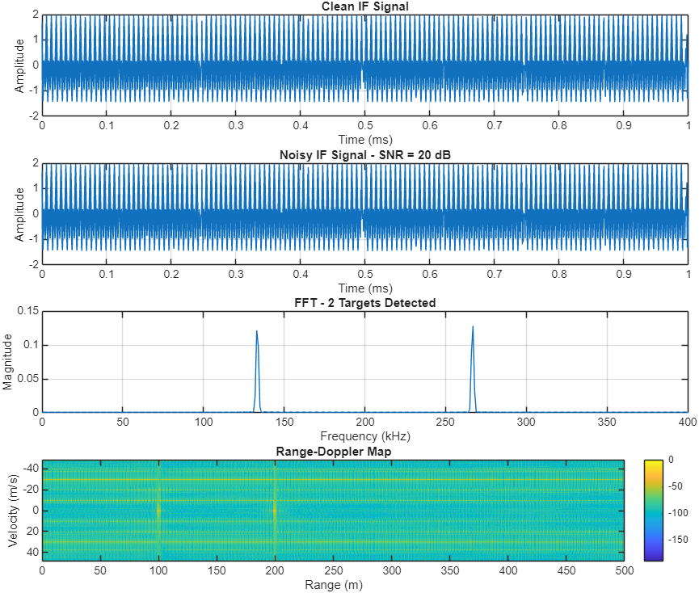
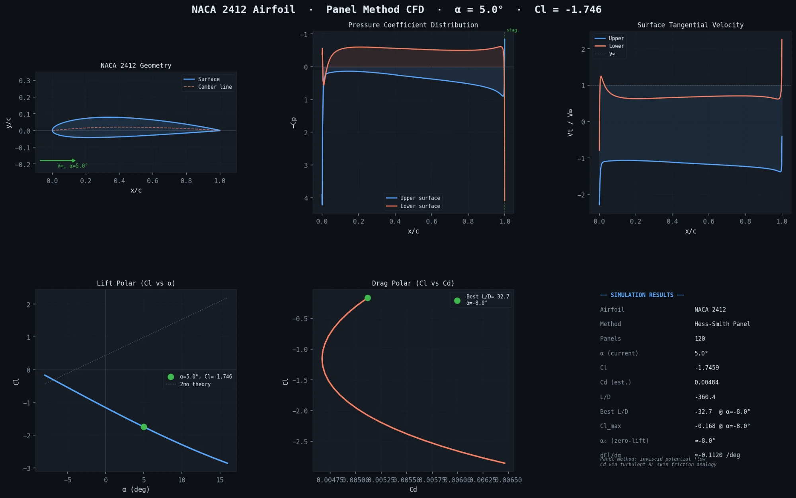

Aerospace Engineering · Syracuse University
Michael Kenyon
Aerospace Engineering student at Syracuse University. I build models and simulations in MATLAB, Python and R, and I like turning physics into tools I can reuse.
Selected projects
Personal projects, each with graphs, results and code on its own page.
-

Personal · MATLAB
Standard Atmosphere → Saturn V Drag
MATLAB functions that chain temperature, pressure (solved with
ode45) and density into a Mach-dependent drag model. Pressure matches standard-atmosphere tables within 0.65% below 30 km. -

Personal · MATLAB
FMCW Radar Simulator, v1 → v4
Built up over four versions, from single-target range to a range-Doppler map for moving targets. Range estimates are within 0.25%, including five targets in heavy noise.
-

Personal · Python
Airfoil Panel Method
A Hess-Smith panel solver for NACA 4-digit airfoils with a six-plot results dashboard. Currently debugging the lift sign convention.
Also: Rocket Simulation v1, an early MATLAB time-integration model of altitude vs. time, as a starting point for adding the atmosphere and drag models.
Coursework
Selected class work, described here rather than posted as code.
-
ECS 104 · MATLAB
Numerical Methods for Engineering
Optimization with
fminconandfminunc, linear systems, bisection and Newton's method, numerical integration and differentiation. Applied to lift-to-drag ratio in steady level flight, cantilever beam sizing and heat flow through a furnace wall. -
MAE 333 · R
Data Analysis: 3D-Printer Settings
Cleaned a 3D-printing dataset and used cross-tabulations, correlations and ggplot2 box and scatter plots to compare how material, infill and print settings affect elongation and surface roughness.
-
ECS 101 · Team of 3
Peregrinus Rover
An autonomous sample-collecting rover with a claw (one fixed arm, one motor-driven) and tireless front wheels to reduce friction in turns. Planned the mission order and estimated the team's score.
-
WRT 205 · Technical writing
I-81 Viaduct Civic Issue Brief
A brief and presentation on Syracuse's I-81 Community Grid decision, analyzing stakeholders, federal, state and local policy, and competing arguments.
Skills & tools
MATLAB
ode45, curve fitting, optimization, FFT and signal processing
Python
NumPy, SciPy, Matplotlib
R
Data cleaning, ggplot2, dplyr, statistics
Communication
Technical writing, team presentations, Excel